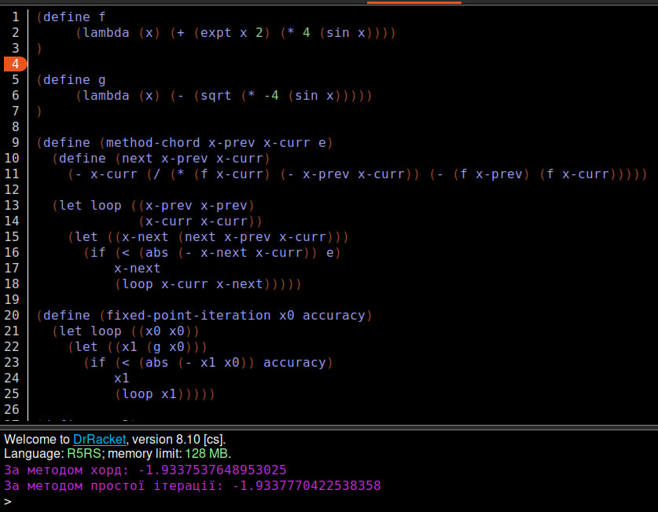
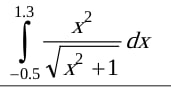
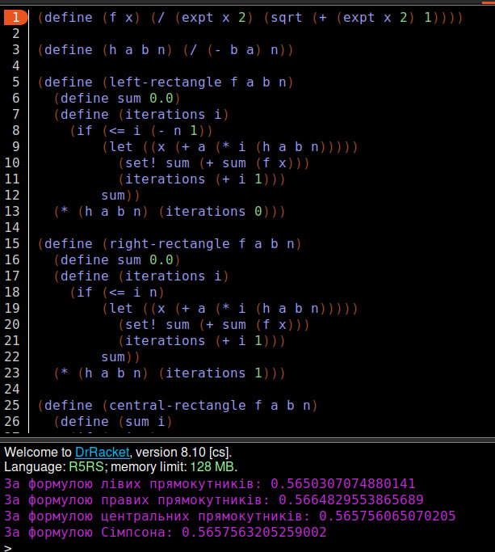

Лабораторна робота 3
Мета роботи
Розв’язати нелінійні рівняння та здійснити чисельне інтегрування функцій наближеними методами, використовуючи мови функціонального програмування та lambda, let та set! форми.
Вибір мови програмування та IDE
Для виконання даної лабораторної роботи було використано мову функціонального програмування Scheme та IDE DrRacket. Мова Scheme надає великий набір числових типів і операцій з ними, має неявні типи даних та статичну область видимості. DrRacket дозволяє програмувати на великій кількості мов функціонального програмування та має зручний інтерфейс.
Завдання 1
Умова завдання
Знайти корені нелінійного рівняння виду x^2 + 4 sin x = 0. Пошук наближеного значення хоча б одного кореня рівняння f(x) = 0 на відрізку [a; b] здійснювати методами хорд та простої ітерації. Значення a, b інтервалу вибрати самостійно. Порівняти результати розв’язків двома методами.
Код програми:
(define f
(lambda (x) (+ (expt x 2) (* 4 (sin x))))
)
(define g
(lambda (x) (- (sqrt (* -4 (sin x)))))
)
(define (method-chord x-prev x-curr e)
(define (next x-prev x-curr)
(- x-curr (/ (* (f x-curr) (- x-prev x-curr)) (- (f x-prev) (f x-curr)))))
(let loop ((x-prev x-prev)
(x-curr x-curr))
(let ((x-next (next x-prev x-curr)))
(if (< (abs (- x-next x-curr)) e)
x-next
(loop x-curr x-next)))))
(define (fixed-point-iteration x0 accuracy)
(let loop ((x0 x0))
(let ((x1 (g x0)))
(if (< (abs (- x1 x0)) accuracy)
x1
(loop x1)))))
(define a -3)
(define b -1)
(define epsilon 0.0001)
(define x0 (/ (+ a b) 2.0))
(define result-chord (method-chord a b epsilon))
(define result-iteration (fixed-point-iteration x0 epsilon))
(display "За методом хорд: ")
(display result-chord)
(newline)
(display "За методом простої ітерації: ")
(display result-iteration)
(newline)
Результат роботи програми
Достовірність результату:

Завдання 2
Умова завдання
Написати процедури для обчислити інтеграла за формулами прямокутників і Сімпсона. Порівняти результати обчислення.
Код програми:
(define (f x) (/ (expt x 2) (sqrt (+ (expt x 2) 1))))
(define (h a b n) (/ (- b a) n))
(define (left-rectangle f a b n)
(define sum 0.0)
(define (iterations i)
(if (<= i (- n 1))
(let ((x (+ a (* i (h a b n)))))
(set! sum (+ sum (f x)))
(iterations (+ i 1)))
sum))
(* (h a b n) (iterations 0)))
(define (right-rectangle f a b n)
(define sum 0.0)
(define (iterations i)
(if (<= i n)
(let ((x (+ a (* i (h a b n)))))
(set! sum (+ sum (f x)))
(iterations (+ i 1)))
sum))
(* (h a b n) (iterations 1)))
(define (central-rectangle f a b n)
(define (sum i)
(if (= i n)
0
(+ (f (+ a (* (+ 0.5 i) (h a b n)))) (sum (+ i 1)))))
(* (h a b n) (sum 0)))
(define (xk x y z)
(+ x (* y z)))
(define (xk_1 p l r)
(+ p (* (- l 1) r)))
(define (simpson f a b n)
(define sum1 0.0)
(define sum2 0.0)
(define (calcul k)
(if (<= k n)
(begin
(if (< k n)
(set! sum1 (+ sum1 (f (xk a k (h a b n))))))
(set! sum2 (+ sum2 (f (/ (+ (xk a k (h a b n)) (xk_1 a k (h a b n))) 2))))
(calcul (+ k 1)))))
(calcul 1)
(define result (* (/ (h a b n) 3)
(+ (+ (+ (* (/ 1 2) (f a)) sum1) (* 2 sum2)) (* (/ 1 2) (f b)))
))
result)
(define result-left (left-rectangle f -0.5 1.3 1000))
(define result-right (right-rectangle f -0.5 1.3 1000))
(define result-central (central-rectangle f -0.5 1.3 1000))
(define result-simpson (simpson f -0.5 1.3 1000))
(display "За формулою лівих прямокутників: ")
(display result-left)
(newline)
(display "За формулою правих прямокутників: ")
(display result-right)
(newline)
(display "За формулою центральних прямокутників: ")
(display result-central)
(newline)
(display "За формулою Сімпсона: ")
(display result-simpson)
Результат роботи програми
Достовірність результату:

Висновок
В ході виконання даної лабораторної роботи було розв'язано нелійнійне рівняння методами хорд та простої операції, також було обчислено інтеграл формулами прямокутників та Сімпсона. В результаті коди методів в обох завданнях видавав однаковий результат.